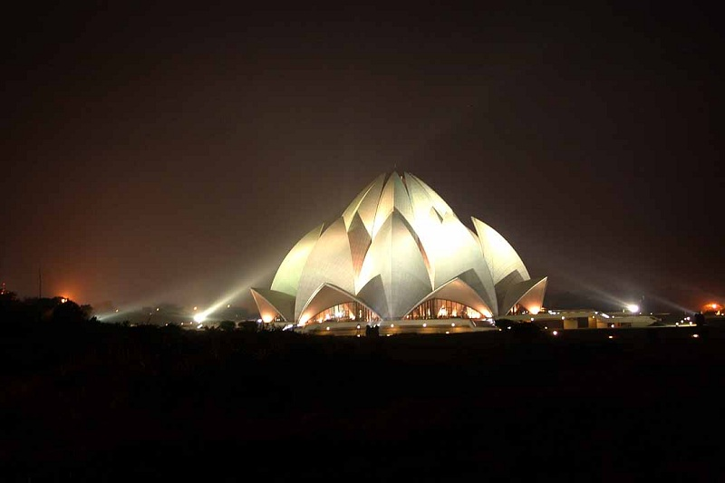

East of Nehru place, this temple is built in the shape of a lotus flower and is the last of seven Major Bahai's temples built around the world. Completed in1986 it is set among the lush green landscaped gardens.
The structure is made up of pure white marble The architect Furiburz Sabha chose the lotus as the symbol common to Hinduism, Buddhism, Jainism and Islam. Adherents of any faith are free to visit the temple and pray or meditate.
Around the blooming petals there are nine pools of water, which light up, in natural light. It looks spectacular at dusk when it is flood lit.